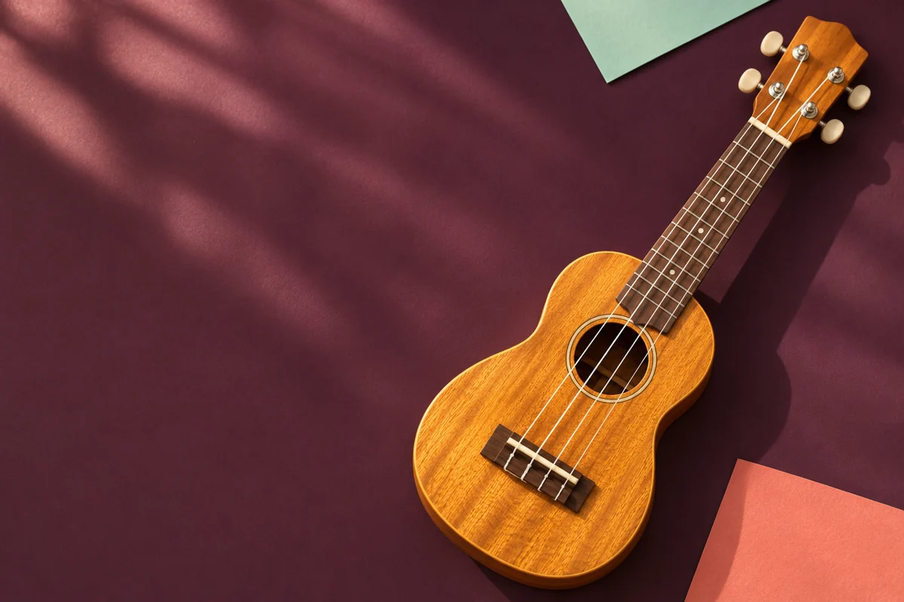
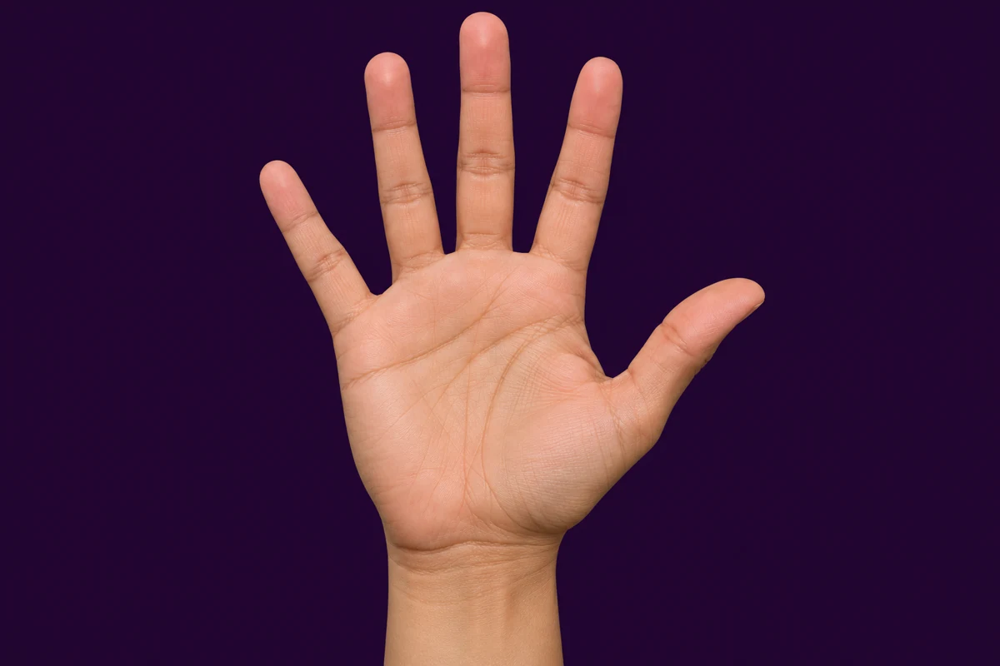
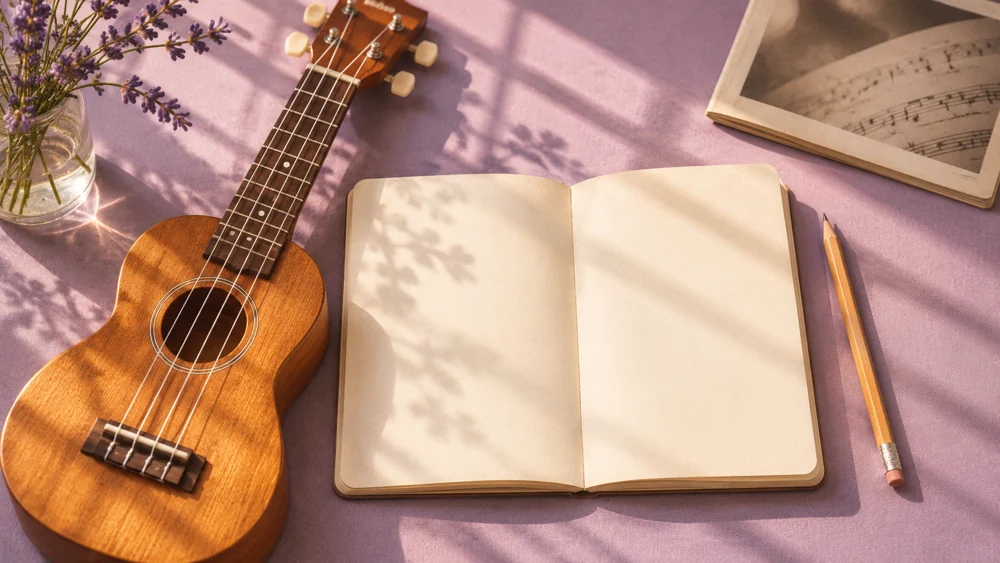

Apoya los cuatro
Coloca los dedos 1, 2, 3 y 4 en cuatro trastes seguidos, sobre una misma cuerda del ukelele.
La gimnasia dactilar te ayuda a desarrollar independencia, coordinación y control en la mano que pisa las cuerdas. Vamos paso a paso, sin correr.

No necesitas tocar rápido. El objetivo es que cada dedo pueda moverse sin que los demás lo sigan.

Usaremos los números para saber qué dedos levantar.
En ukelele, la mano que pisa las cuerdas utiliza esta numeración. El pulgar ayuda a sostener el mástil por detrás y no participa en las secuencias.
Coloca los dedos 1, 2, 3 y 4 en cuatro trastes seguidos, sobre una misma cuerda del ukelele.
Separa de la cuerda solo los dedos que indica el ejercicio. Los demás continúan apoyados.
Devuelve los dedos a la posición inicial antes de pasar al siguiente movimiento. Haz 4 vueltas por grupo.
Un truquito: si los trastes 1 al 4 quedan muy separados para tu mano, prueba primero del 5 al 8. La idea es moverte con comodidad y sin tensión.
Estas son las secuencias de tu guía original. Cada número representa un dedo que debes levantar.
Levanta un solo dedo cada vez.
Levanta dos dedos consecutivos a la vez.
Combina dedos que no están juntos.
En los ejercicios de dos números, levanta ambos dedos al mismo tiempo. Después vuelve a apoyar los cuatro.
Elige un ejercicio y sigue las indicaciones. El diagrama te muestra qué dedos se levantan, mientras los demás permanecen en la cuerda.
Mantén los dedos 2, 3 y 4 apoyados en la cuerda.
Después de levantar los dedos indicados, apóyalos de nuevo antes de avanzar.
Una buena práctica se siente controlada, relajada y posible. Si aparece dolor, detente y descansa. La velocidad llega después, cuando los movimientos ya se sienten naturales.
Volver a practicar
Evita tensar el brazo y la muñeca.
Solo la fuerza necesaria para apoyar los dedos.
Cuatro movimientos limpios valen mucho.
Vuelve a cada grupo cuando lo necesites.